NetBeans IDE 6.0 Information
The NetBeans IDE is a modular, standards-based, integrated development environment (IDE) written
in the Java programming language. The NetBeans project consists of
an open source IDE
and an application platform,
which can be used as a generic framework to build any kind of application.
The focus of NetBeans IDE 6.0 is improved developer productivity through a smarter,
faster editor, and the integration of all NetBeans products into one IDE.
Getting NetBeans IDE 6.0
The currently available download is NetBeans IDE 6.0.1, which is a small update to NetBeans IDE 6.0.
Click the Download button to get the latest release.
The majority of the NetBeans IDE 6.0 code is available under a dual license consisting of the Common Development and Distribution License (CDDL) v1.0 and the GNU General Public License (GPL) v2. See details about the components in NetBeans and the licenses under which they are covered.
What's New in NetBeans IDE 6.0.1
The currently available download is NetBeans IDE 6.0.1, which
is a small update to NetBeans IDE 6.0. This update
includes the following changes:
- Addition of Japanese,
Simplified Chinese, and Brazilian Portuguese localizations.
- Glassfish V2 is replaced with Glassfish V2 UR1.
- The integration of the December 2007 and January 2008 bug fixes listed on
the following page: http://wiki.netbeans.org/wiki/view/NetBeans6.0PatchesInfo.
If you have already installed NetBeans IDE 6.0, you can get these fixes
through the IDE's Plugins Manager without downloading the 6.0.1 version. In the IDE, choose
Tools > Plugins, select the Update tab, and then select the
appropriate updates.
Documentation
Use the following documents to get started with NetBeans 6.0. This documentation will work for NetBeans 6.0.1.
What's New in NetBeans IDE 6.0
Below is a summary of the most exciting new features in NetBeans IDE 6.0.
You can also visit the New and Noteworthy page for a
detailed list of changes since the 5.5.1 release.
Editor Improvements
- Smarter code completion. The NetBeans editor is quicker and smarter,
providing completions for keywords, fields, and variables. It also lists the most
logical options at the top, and lets you dig down into the full options at the bottom
|
 |
- Highlights. You can think of the highlights feature as an
easy-to-use and more correct substitution for the editors Search. The IDE
tracks the position of the caret and, based on it, highlights some parts
of the code. The highlights are marked with a background color in the editor
they are also put into the error stripe, which permits for having overview
of the whole file.
- Better Navigation and Inspection. In addition to Highlights,
the source editor lets you quickly navigate through your code with improved Navigator
window organization and the Members and Hierarchy Inspectors.
- More than just code completion. With live templates and Surround With
functionality, you can quickly enter commonly used blocks of code and focus
on the business logic.
- There is much more. See the Java Editor User's Guide.
|
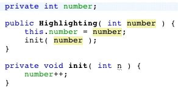 |
Ruby/JRuby/Ruby on Rails Support
- Project Support. Quickly create Ruby projects with logical structure, run Ruby files, configure other Ruby interpreters (such as JRuby or native Ruby), locate and install Ruby Gems through a graphical wizard, create and execute unit tests, run RSpec specification files, jump between a Ruby file and its corresponding unit test or spec file, and so on. View Demo.
- Advanced Ruby Editing. Advanced code editing for Ruby, using semantic information about the program to offer code completion, showing available classes and methods for the current expression, along with the associated RDoc documentation. The syntax highlighting is enhanced with semantic information, such that unused local variables and parameters are shown in gray. There are many other editing features, including Goto Declaration for jumping to the declaration point of a class or method reference. View Demo.
- Ruby Debugger. Single-step or run through Ruby code, set breakpoints, look at local variables, navigate the call stack, switch threads, and evaluate expressions by just hovering the mouse over the variable in the Editor. There is also support for the "fast debug" extension.
- Ruby on Rails Support. Generate Rails projects, or generate code through the Rails code generator graphical wizard, which offers documentation on the plugins within the wizard itself. Third party generators are also supported. Furthermore, there are actions for jumping quickly between a Rails action and its corresponding View, or warping to the browser for the URL most relevant to the file you are editing. Database migrations and Rake targets are supported as well. Finally, RHTML files are highlighted (along with improved NetBeans 6.0 support for related files, such as JavaScript and CSS).
|
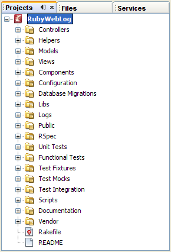
|
Easier Installation and Upgrading
- Unified installation experience. The new NetBeans installer makes
it easier to get the functionality that you want. No more downloading and installing
separate packs. Now you choose the download that best suits you and
install the features and runtimes you need in one installer. You can add functionality
later by re-running the installer.
- Keep updated. The Update Center and Module Manager have been
merged into the Plugins manager. Easily enable and disable functionality, search
for updates, and get new functionality all in one place.
|
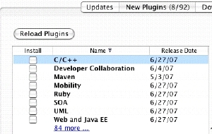
|
Swing GUI Development
|
In addition to numerous improvements of the highly acclaimed
NetBeans GUI Designer (formerly known as "Project Matisse"),
Java desktop application development support has been enhanced
with following features:
- Swing Database Applications. Taking advantage of Beans Binding
technology (JSR 295) and the Java Persistence API, it is now easier
than ever to create Swing desktop database applications. Using the
new Java Desktop Application project template, you can quickly set up
a form that displays a database table and enables you to modify the
database. Bind a database table to an existing form by dragging a table
from the Runtime window onto a form. View Demo.
- Beans Binding. Besides helping with database applications,
the IDE's support for beans binding also makes it much easier for you to keep
properties of different beans in synch.
- Swing Application Framework (JSR 296) support. You can now
develop small to medium-sized desktop applications faster than ever by taking advantage
of the building blocks provided by the Swing Application Framework.
This framework simplifies the handling of the application lifecycle, actions and resources.
|
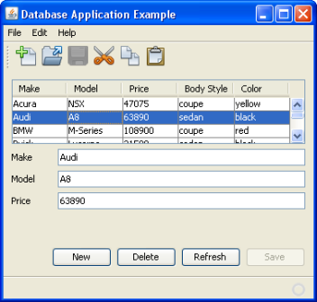
|
Profiling
- Profiler integrated into NetBeans IDE. NetBeans Profiler has become an integral part of NetBeans IDE 6.0!
There's now no need to download and install the NetBeans Profiler separately.
- Profiling Points. Profiling points enable you to place profiling points in your source code to more precisely
control the collection of profiling results.
- Compare Memory Snapshots. You can compare saved and unsaved memory snapshots to see what objects
have been created or released from the heap between when the snapshots were taken.
For more, see Comparing Memory Snapshots.
- DrillDown Graph. Profiling results can be displayed in a graph that categorizes where CPU time has been spent.
You can click on the graph sections to drill down from high-level categories to more detailed profiling information.
For more, see Areas of Interest - Categorization rules
- Heap Walker. When profiling your application you can now use the Heap Walker to help evaluate Java heap contents and search for memory leaks.
For more information about Heap Walker, see the Profiler 6.0 documentation on Heap Walker.
- JMeter Integration. Added support for JMeter enables you to start JMeter scripts at the beginning of a
profiling session, providing an easy way to do load testing while you profile.
For more, see Load Generator Support. (Archived 6.0 document: profile_loadgenerator.html)
- Dynamic Attach on JDK 1.6.
|
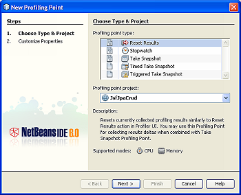

|
Web and Java EE
- Built-in visual design for web applications. The Visual Web project template is now merged with the main web application project template. Just add the Visual Web JavaServer Faces framework to your web project and
leverage a comprehensive library of Ajax enabled JavaServer Faces components to build your application.
- Visual page flow editing. Linking pages in your web application has never been easier with the new
Visual Page Flow Editor, supporting JavaServer Faces, JSP, and HTML pages.
- Enhanced JavaScript support. Full syntax highlighting, code
completion, and error checking for JavaScript code is available both in
stand-alone JavaScript files and in HTML, RHTML, and JSP files.
- Enhanced web services support. Drag and drop consumption of web services
in visual web app pages. Restful web services are available to wrap entity beans and
provide easy CRUD functionality. Better visual editing of JAX-WS web services. Integral support for web service security, reliability and transactions. Improved web service interoperability.
Deployment to Sun Java System Application Server, GlassFish, Tomcat, JBoss 4.2.1, and JBossWS 2.0.1.
- Support for Ajax-enabled JavaServer Faces components. Project Woodstock component library encapsulates Javascript and complex server side within JavaServer Faces components. Using an Ajax-enabled component is like working with any other component: Drag and drop the component, set properties, and customize server-side event handlers.
- Easy migration from Java Studio Creator. Positioned as the migration path for Java Studio Creator 2, NetBeans 6 preserves your investment in Java Studio Creator projects while allowing you to leverage the many productivity features of the NetBeans IDE in one tool.
- Enhanced CSS editing. The CSS Editor lets you preview changes to your CSS
as you make them.
|
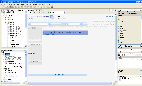
Click to see Visual Web developer Mauro Cioni's project migrated to NetBeans IDE 6.0.
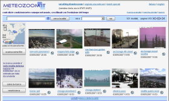
Click to see Visual Web developer Mauro Cioni's live website.
|
Mobility
- New Integrated UI for CLDC/MIDP and CDC development. The
Mobility pack now supports the project properties previously available
only for CLDC/MIDP projects. These include project configuration support
for device fragmentation, integrated obfuscation and optimization
support, and multiple deployment options, all built on Apache Ant
for easier coding and management.
- New game builder. Now it's easier to create mobile games
with the Mobility Pack's visual editing support for the MIDP 2.0 Game
API. The API supports animated sprites and the ability to arrange
tiled layers into scenes.
- New Visual Mobile Designer. The Visual Mobile Designer
(VMD) has been re-designed for improved functionality and usability.
- Design analysis. Design Analysis identifies unused
components for removal from complex visual designs .
- New custom components. New components for the Visual
Mobile Designer simplify the creation and design of mobile file browsers,
Short Message Service (SMS) composers, login screens, and Personal
Information Manager (PIM) browsers.
- New components for Flow Control.
- Generated code is now easier to modify.
- Re-written JSR-172 stub compiler. The new generator
has support for Base64 type and is able to parse documentation from
methods.
- Improved project configuration management. A new
UI for the Project wizard makes it easier to add new project configurations
for new mobile devices. It's now easier to create multiple builds
for multiple configurations.
|
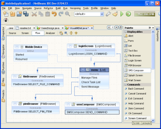
|
SOA
- Artifacts for service composition and assembly. The Composite Application Service Assembly Editor allows you to edit the configuration of enterprise projects. It supports adding and/or modifying bindings and service endpoints, adding/removing connections between Service Units to connect to endpoints of external Service Units, and creating Binding Component-to-Binding Component connections.
- Graphical WSDL editor. Create abstract WSDL documents (WSDL without bindings) easily along with partner link type information.
- XSLT editor to edit transformations. Visually edit transformations.
- Tooling support for binding components. Support for File, HTTP, and JMS binding components.
- Java EE Web Service project support. A Java EE project that implements web service server or client interfaces can be added to a composite application as a JBI Service Unit. The Java EE project can communicate with other service units directly using the internal JBI Normalized Message Router (NMR).
|
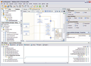
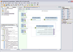
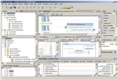
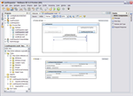 |
UML
- Template based code generation now available and customizable. UML now provides template based code generation for Forward Engineering. The new code generation approach uses FreeMarker templates, which allow users to customize how code is generated by simply modifying the templates used. Users can enhance code generation by adding new code generation templates using the Domain Templates panel in the UML Options window.
- Enhanced code generation feature. The ability to merge newly generated source code into existing source code files is now available.
- Improved collections management. A user's collection types are preserved during Forward and Reverse Engineering and may be set and changed via properties dialog for code generation.
- Alignment Tools now available. The Diagram Editor now has alignment tools available. Select the diagram elements to align, right-click the selection, and choose Align from the pop-up menu.
- New Window Layout. By default, the Documentation window is now docked to the Properties window area. The Design Center window is now docked to the Explorer area by default.
- Save As action now on diagram node. The "Save As" action has been added to diagram nodes. The action allows a diagram to be duplicated.
|
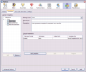
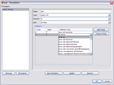
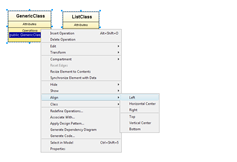
|
C/C++
- Improved gdb debugging quality and performance
- New code assistance features
- Type hierarchy, which lets you inspect all subtypes or supertypes of a class.
- Include hierarchy, which lets you inspect all header and source files that are directly
or indirectly included in a source file, or all source and header files that
directly or indirectly include a header file.
- Code completion for #includes
- Switch between source file and header file with the same name and corresponding extension
- Makefile-based projects dependency
- Support for Mac OS X
|
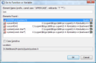 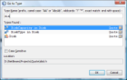
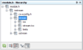 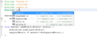
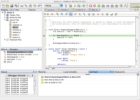
|
NetBeans Platform API Improvements
- Visual Library API. The Visual Library API, which is the next generation
Graph Library, is useful for data visualization, such as graph-oriented modeling, in
NetBeans modules. For further information, view demo or
visit https://netbeans.org/projects/platform/.
- NetBeans Preferences API. The NetBeans Preferences API provides a
NetBeans-specific implementation of the JDK's Preferences API. For example, it
allows you to store preferences in the NetBeans user directory.
- Lexer. Enhanced NetBeans API for creating tokens from a textual input.
The tokens can then be used to, for example, provide syntax coloring. For
further information, see https://netbeans.org/projects/editor/.
- Logger. NetBeans API ErrorManager deprecated, in favor of standard
JDK's Logger mechanism. For details, see
Logging in NetBeans.
- Generified Interfaces. The JDK 1.5 generics are used throughout the NetBeans APIs.
For further details, see the list of
NetBeans API Changes.
|
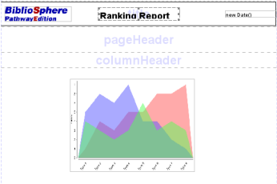
|
And More...
{kind=link}
{kind=link}
{kind=link}
{kind=link}
{kind=link}
{kind=link}
{kind=link}
{kind=link}
{kind=link}
{kind=link}
{kind=link}
{kind=link}
{kind=link}